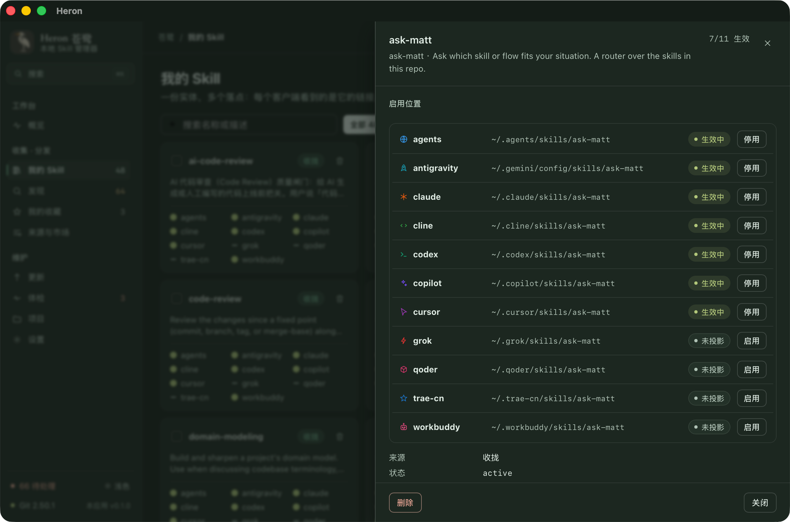
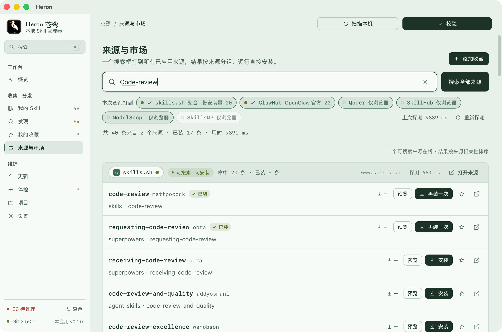
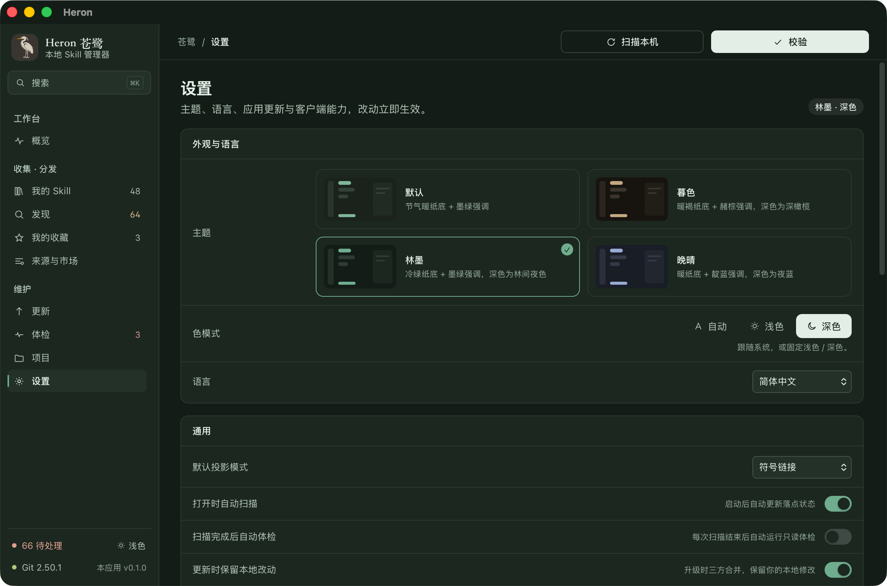

告别散落目录、重复拷贝与升级覆盖。Heron 用 Per-Skill Git 仓库托管你的全部 Agent Skill，以可视化工作台与同源 CLI 驱动整条生命周期。
先全量备份，Blake3 哈希去重，每个 Skill 独立 Git 仓库（main / upstream / v* tag）。
以下均为 Heron 0.1.0 真实运行截屏。Rust + Tauri 2 构建，安装包仅 5–15 MB，桌面端与 CLI 完全同构。
聚合坏链、待纳管发现与 12+ 客户端实时生效读数，告别在十几个隐藏文件夹里逐一排查。

点开任意 Skill 即可在侧边抽屉中一键启停各客户端投影，清晰区分生效中、被压制、坏链与需重启。

支持 skills.sh、ClawHub 搜索直装，兼容 HTTPS / SSH / Monorepo 子目录深链与私有团队仓库。

支持系统跟随与深浅色一键切换，提供默认投影模式、自动体检与三方合并偏好配置。

支持 macOS 12+ (Apple Silicon) 与 Windows 10/11 (x64)，需本机安装 Git 2.38+。